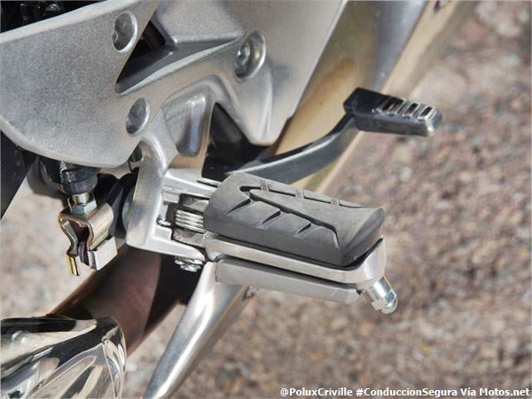

| Parte de la Moto | Término | Definición | Imagen |
| Parte que conecta el manillar con la rueda delantera | Manillar | Barra que se utiliza para controlar la dirección de la moto | |
| Parte que se utiliza para acelerar la moto | Acelerador | Palanca que controla la cantidad de combustible que se inyecta en el motor | |
| Parte que se utiliza para frenar la rueda delantera y trasera | Freno delantero | Sistema de frenos que utiliza pastillas o discos para detener la rotación de la rueda delantera / trasera. | |
| Freno trasero |  | ||
| Parte que se utiliza para sujetar la moto | Patas de cabra | Soporte que se utiliza para mantener la moto en posición vertical cuando está estacionada. | |
| Soporte lateral | |||
| Parte que se utiliza para iluminar el camino | Faros | Luces que iluminan el camino por la noche. | |
| Parte que se utiliza para cambiar de marcha | Cambio de marchas | Mecanismo que permite al conductor seleccionar la marcha adecuada para la velocidad y el terreno. | |